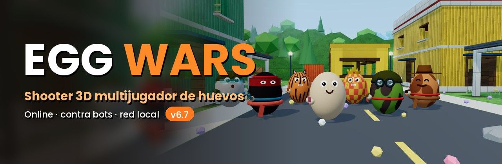
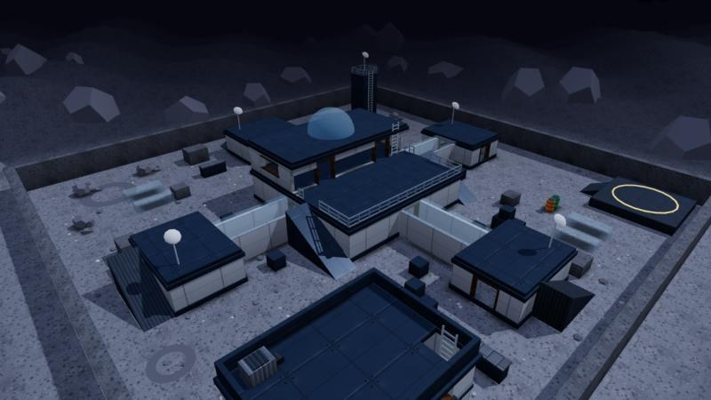
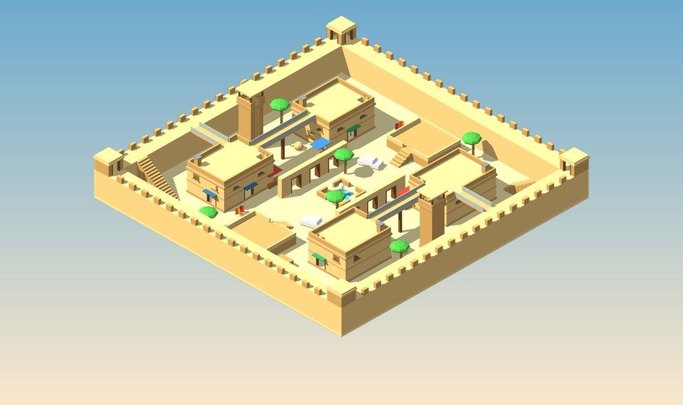
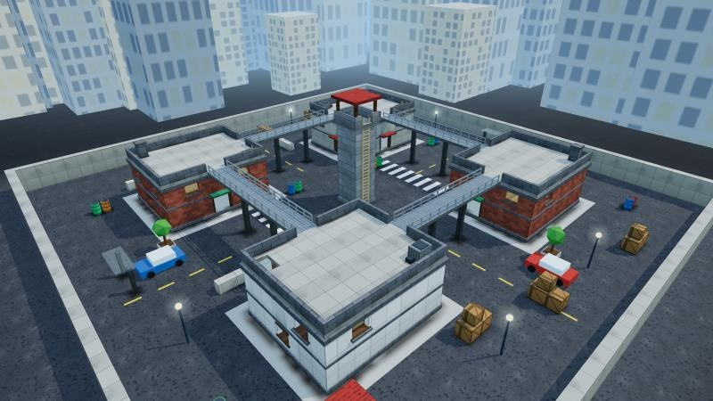
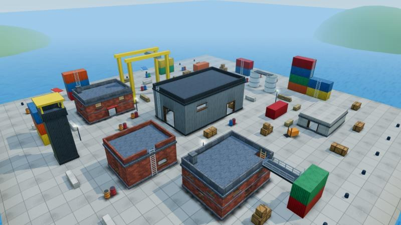

EGG WARS
Shooter en 3D en el navegador en el que los jugadores son huevos. Multijugador online, bots y 16 mapas hechos a mano.A 3D browser shooter where the players are eggs. Online multiplayer, bots and 16 handmade maps.
- Three.js
- Node.js
- Socket.io
- PostgreSQL
- 16 mapas16 maps
- 8 armas8 weapons

Qué esWhat it is
Un juego de disparos en primera persona que funciona en el navegador, sin instalar nada. Lo empecé para jugar con mis compañeros en la red del instituto y fue creciendo hasta tener servidor online, cuentas de usuario y bots.A first-person shooter that runs in the browser with nothing to install. I started it so my classmates and I could play on the school network, and it grew into an online server with user accounts and bots.
Está inspirado en Shell Shockers, pero todo el código, los mapas y las reglas son míos.It is inspired by Shell Shockers, but all the code, maps and rules are my own.
Cómo se juegaHow to play
- EntraOpen itAbre la versión online para jugar con otras personas, o la de bots si quieres practicar solo. Funciona en cualquier navegador moderno.Open the online version to play with other people, or the bots version to practise alone. It works in any modern browser.
- Crea partida o úneteCreate or join a matchElige mapa, modo y número de bots, o entra en una sala que ya esté abierta.Choose map, mode and number of bots, or join a room that is already open.
- Elige armaChoose a weaponHay 8: EggK-47, Scrambler, Free Ranger, RPEGG, Whipper, Crackshot, Tri-Hard y la pistola Cluck 9mm.There are 8: EggK-47, Scrambler, Free Ranger, RPEGG, Whipper, Crackshot, Tri-Hard and the Cluck 9mm pistol.
- Cumple el objetivo del modoPlay the objectiveTodos contra todos, duelo por equipos, King of the Coop (conquistar el gallinero) o Capture the Spatula (robar la espátula).Free for all, team duel, King of the Coop (hold the coop) or Capture the Spatula (steal the spatula).
ControlesControls
- WASD moversemove
- Espacio saltarjump
- Clic dispararshoot
- R recargarreload
- Q granadagrenade
- E cambiar armaswitch weapon
- F golpemelee
- Esc menúmenu
MapasMaps
Los 16 mapas están hechos a mano, con varios niveles (edificios de dos pisos, puentes, torres), coberturas y un paisaje alrededor para que no se note dónde acaba el mapa.All 16 maps are handmade, with several levels (two-storey buildings, bridges, towers), cover and scenery around them so you cannot tell where the map ends.






Cómo está hechoHow it is built
El servidor manda: el navegador sólo envía lo que hace el jugador y el servidor decide si es posible. Así se evitan trampas como volar, atravesar paredes o disparar más rápido.The server is in charge: the browser only sends what the player does, and the server decides whether it is possible. That stops cheats like flying, walking through walls or shooting faster.
Lo más destacadoHighlights
Anti-trampasAnti-cheat
El servidor comprueba movimiento, impactos, munición y cadencia.The server checks movement, hits, ammo and fire rate.
Bots
Suben rampas y escaleras y juegan el objetivo de cada modo.They climb ramps and stairs and play each mode's objective.
Tres formas de jugarThree ways to play
Online en Render, contra bots en GitHub Pages y en red local.Online on Render, against bots on GitHub Pages, and on a local network.
Huevo ImpostorEgg Impostor
Un modo aparte de deducción social a bordo de una nave.A separate social-deduction mode aboard a spaceship.
EnlacesLinks
Hay una guía aparte sólo del juego, con todas las armas, mapas y la documentación técnica.There is a separate guide just for the game, with every weapon, map and the technical docs.